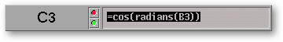

<!-- Documentation XQuad (c)1995-2000 AXENE contact axene@axene.org>
<html>

<head>
<title>Edit bar</title>
</head>

<body BGCOLOR="#FFFFFF" BACKGROUND="Images/back.gif" TEXT="#000000">

<p ALIGN="right"> </p>

<p><br>
<br>
The edit bar allows changing the active cell&#146;s content. Applied styles cannot be seen
in the edit bar, only the formula is displayed.<br>
<br>
</p>

<hr>

<p align="center"><br>
 <br>
<small><i>Screen snap: Edit bar.</i></small></p>

<p><br>
</p>

<hr>

<p><br>
</p>

<h3>Elements of the horizontal bar:</h3>

<ul>
  <li><a NAME="coord_label">A text displaying the active cell's coordinates. A cell
    coordinates are composed of a column number (as a letter) and a line number. When there is
    an area selected, the number of lines and columns is written as &quot;L<em>number_of_lines</em>
    x C<em>number_of_columns</em>&quot;.</a><br>
    &nbsp;</li>
  <li><a NAME="red_led"> The &quot;red
    light&quot; icon button allows the user to <strong>cancel the text input</strong> and put
    the old value back. Pressing the &quot;<tt>Escape</tt>&quot; key has the same effect.</a><br>
    &nbsp;</li>
  <li><a NAME="green_led"> The
    &quot;green light&quot; icon button allows the user to <strong>confirm the modification</strong>
    in the text filed of the edit bar. Clicking on this button does not make another cell
    active. Pressing the &quot;<tt>Enter</tt>&quot; key has the same effect.</a><br>
    &nbsp;</li>
  <li><a NAME="textfield">The text field allows the user to <strong>alter the active cell's
    content</strong>. Input is limited up to 4000 characters. To validate the cell, you can
    press the &quot;<tt>Return</tt>&quot; key, or click on another cell, or use arrow keys.</a><br>
    &nbsp;</li>
</ul>

<p><br>
</p>

<h3><a NAME="text_edition">Text editing</a></h3>

<p>When the edit bar's text field's content does not start with the &quot;=&quot;
character, and it does not look like a number; then it is considered as text. If you want
a text to start with a &quot;=&quot; character, you have to make it begin with a
&quot;'&quot; (apostrophe) character. A text in a cell is left aligned by default and can
overlap adjacent cells.</p>

<p><br>
</p>

<h3><a NAME="value_edition">Numerical value editing</a></h3>

<p>There can be several <a HREF="Box_NumFormat.html#format_type_list">kind of numerical
values</a>. A numerical value in a cell is right aligned by default (except for boolean
values which are centred) and cannot overlap adjacent cells.</p>

<p>To enter a simple numerical value (normal kind) in a cell, you just have to input
numbers and possibly a sign or/and a decimal point ([+/-]XXXX[.XXX]).</p>

<p>Cell value can be a percentage value if you end the numerical value with an
&quot;%&quot; character ([+/-]XXXX[.XXX]%).</p>

<p>Numerical value can also be entered in scientific notation with the mantissa followed
by the exponent ([+/-]XXXX[.XXX][E/e][+/-]XXX).</p>

<p>You can directly enter &quot;day of the week&quot; and &quot;month of the year&quot; by
entering the first three letters of the word (case and accent insensitive).</p>

<p>Inputs like &quot;true&quot; or &quot;false&quot; (case insensitive) allow to assign
boolean values to cells.</p>

<p>To assign a &quot;date&quot; value to a cell, you must use the following formats: 

<ul>
  <li>DD/MM, MM/[-]AA[AA] or DD/MM/[-]AA[AA]</li>
  <li>DD-MM, MM-[-]AA[AA] or DD-MM-[-]AA[AA]</li>
</ul>

<p>You can use negative number to specify years before J.C. Only valid data will lead to a
numerical value, others will lead to a text value.</p>

<p>To assign a &quot;time&quot; value to a cell, you must use the HH:MM[:SS] format.
Invalid hours cannot lead to a numerical value.</p>

<p><br>
</p>

<h3><a NAME="formula_edition">Formula editing</a></h3>

<p>A formula must always begin with a character '=' (equal). It can return a value, a text
or an error, but in all cases, the returned result cannot overlap adjacent cells.</p>

<p>You can use a reference from an other cell as a formula parameter. For example, if you
want cell C3 to display the cosine value of an angle in degrees contained in the cell B3,
you should insert this formula in cell C3: '<tt>=cos(radians(B3))</tt>'.</p>

<p>A cell reference can be relative or absolute.</p>

<p>A reference is relative by default. That means in case the formula is moved in another
cell, the cell reference will be updated in accordance with the moving. From previous
example, if we move cell C3 to E6 (2 columns right, 3 lines down), the formula will become
'<tt>=cos(radians(D6))</tt>'.</p>

<p>When a reference is absolute, the formula is not updated and the referenced cell always
remains the same, even in case of a move. To write an absolute cell reference you have to
put a character '$' (dollar) before each coordinate. From the previous example, the
formula becomes '<tt>=cos(radians($B3$3))</tt>'.</p>

<p>A reference can be line relative and column absolute, or vice versa. You just have to
put a character '$' (dollar) before the absolute coordinate. For example: <tt>B$3, $C2</tt>...</p>

<p>Some functions (like <a HREF="Functions_numeric.html#somme">sum</a>, <a
HREF="Functions_numeric.html#produit">product</a>, <a HREF="Functions_statistic.html#min">min</a>,
<a HREF="Functions_statistic.html#max">max</a>...) allow cells area reference as
parameter. This kind of reference must be written in form of 'C<sub>1</sub>L<sub>1</sub>:C<sub>2</sub>L<sub>2</sub>',
'C<sub>1</sub>:C<sub>2</sub>' or 'L<sub>1</sub>:L<sub>2</sub>' (with C as a column letter
and L as a line number). The character '$' (dollar) allows to keep a coordinate absolute.
For example: to get the sum of all the values in the column A, you have to write this
formula: '<tt>=sum(A:A)</tt>'.</p>

<p>You can also make reference sequences from several cells or cells areas separated by
the character ';' (semicolon). For example to get the lowest value in the columns B and D
you have to write this formula: '<tt>=min(B:B;D:D)</tt>'.</p>

<p>During the formula editing (when the edit field begin with the character '='), you can
click on a cell of the spreadsheet to add this cell reference to the formula. This cell
reference will be relative, and a character '+' (plus) may be added for formula
consistency.</p>

<p>You can also insert a cell area reference by selecting the area with the mouse. The
area coordinates will be updated into the edit field during the mouse selection. To select
a set of columns/lines in its entirety you have to click on the column/line headers.</p>

<p>When you add cell references by the way of the mouse, you can get sequences of cell
references by keeping the '<tt>ctrl</tt>' key pressed. </p>

<p><br>
</p>

<hr>

<p ALIGN="right"></p>
</body>
</html>
